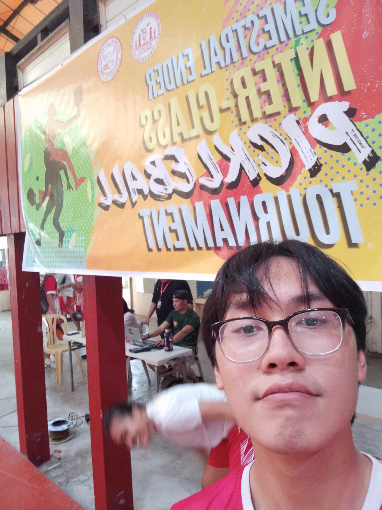

Keyboard Blitz Typing Competition
A keyboard typing competition
CCS Softball Tryouts
CCS Students at work to get into the softball team
Pasiklaban Volleyball Tournament
A spirited event, with teams showing off their volleyball prowess
Dumaguete Sepak Takraw Tournament 76th Dumaguete Charter
Volleyball but with some kung-fu moves

Inter Class Pickleball Tournament
Pickleball tournament with other sections
Vernon Hall Singing Competition
Vernon Hallers compete in a singing competition